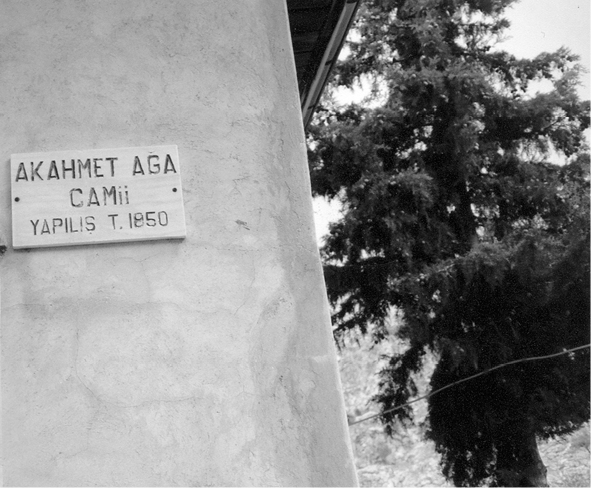
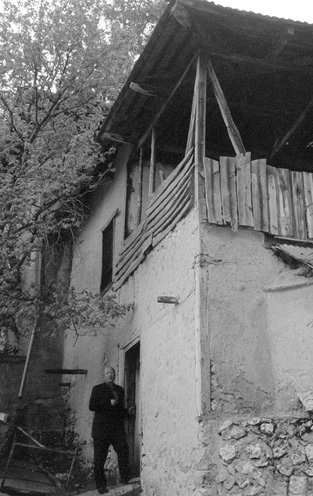
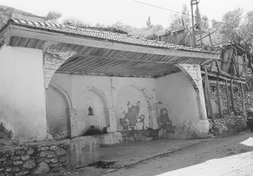
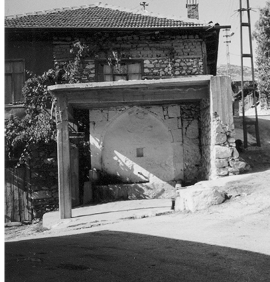

Barla Hayatı
On yedinci yaşın heyecanlı günlerindeydim. Nerdeyse haftanın üç-beş gününde gazetelerin manşetleri ve ilk sayfaları “Nurculuk, Risale-i Nur ve Bediüzzaman Said Nursî” üzerine yazılıp çizilmiş yalan, düzmece haber ve resimlerle dolu idi.
Bu bahsi ve isimleri sormak için Nâzım Gökçek Ağabey’in evine gitmiştim. Kendileriyle Gaziantep Lisesi’nden tanışıyorduk. Ondan, ısrarla Bediüzzaman’ın hayatını yazan bir kitap istemiştim. Daha sonraki günlerde ise kadim dostumuz ve sınıf arkadaşımız Mehmet Kaya kardeşimiz ile istediğim kitabı göndermişlerdi. Eserin kapağında “Bediüzzaman Said Nursi, Tarihçe-i Hayatı, Eserleri, Meslek ve Meşrebi” yazıyordu.
Eserin içindeki beş tane resme tekrar tekrar hayret ve hayranlık içinde bakmıştım. Çünkü bu fotoğraflar, günümüzdeki gazetelerin hemen her gün bahsettikleri Bediüzzaman Said Nursi’ye aitti.
İşte Barla kelimesini ve beldesini ilk defa bu kitaptan okumuştum. Bahsini arz etmeye çalıştığım kısım “İkinci Kısım; Barla Hayatı, Risale-i Nur’un Zuhuru” başlığıyla başlıyordu. Sayfaları çevirdiğimizde “Barla” başlığında yeni bir yazı ile devam ediyordu.
Büyük Tarihçe-i Hayat’ın bu kısımlarını 1957’de Muhterem Mustafa Sungur Ağabey kaleme almıştı. Daha sonraki zamanlarda bunları kendilerine sorduğumda “Barla Hayatı”nı memleketi olan Eflani’de yazdığını ifade etmişlerdi. Ormanların kokusuyla dolu Eflani’nin Çalışlar Köyü’nün ruha ferahlık veren nesiminde, gözyaşları içinde yazdığını anlatmışlardı. Nur beldesi Barla çalışmalarıma böyle aziz bir insanın, böyle kalblere gıda veren bahsiyle başlamak istedim.
İlk defa 1958’de Ankara’daki Doğuş Ltd. Şirketi Matbaası tarafından basılan bu eser, şimdilerde on beşin üzerinde yayınevi tarafından basılmaktadır. Kim bilir nüshalarının sayısı kaç milyonu bulmuştur.

Nur Üstad’ın Barla’ya ilk geldiği gün olan 1 Mart 1927 Salı günü (Ramazan’dan üç gün evvel) kaldığı Ak Ahmed Ağa Camii ve Ak Karakolu (yan sayfada)

Ak Karakolu
Barla’da iki çeşme:

Ak Çeşme

Muş (Muj, Mus) Çeşmesi. Nur Üstad’ın
imamlık yaptığı camiin yanında.